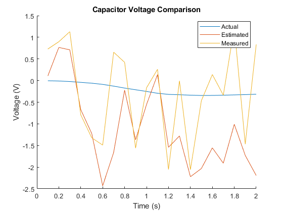

clear
close all;
disp('Problem 1 ---------------------------------------------------------')
pblm1()
clear
disp('Problem 2 ---------------------------------------------------------')
pblm2()
clear
disp('Problem 3 ---------------------------------------------------------')
pblm3()
clear
disp('Problem 4 ---------------------------------------------------------')
pblm4()
clear
disp('Problem 5 ---------------------------------------------------------')
pblm5()
Problem 1 ---------------------------------------------------------
If using the following F, there is a descrepancy for state 2
F =
0.5000 2.0000
0 0
P_minus_inf =
52.0974 -0.0000
-0.0000 10.0000
k_inf =
0.8390
-0.0000
P_plus_inf =
8.3896 -0.0000
-0.0000 10.0000
P_plus_inf_std =
2.8965 + 0.0000i 0.0000 + 0.0000i
0.0000 + 0.0000i 3.1623 + 0.0000i
There is a decrepancy for the secound state.
This is belived to be becouse of the constant input not = 0,
so the steady-state Kalman filter for that state is not as accurate.
---------------------------------------------------------------
The alternative method of simulation:
F =
0.5000 2.0000
0 1.0000
G =
0
0
P_minus_inf =
73.4314 28.8845
28.8845 23.5767
k_inf =
0.8801
0.3462
P_plus_inf =
8.8014 3.4621
3.4621 13.5767
P_plus_inf_std =
2.9667 1.8607
1.8607 3.6847
The alternative method has no descrepancy
Problem 2 ---------------------------------------------------------
Discretized System:
F =
0.9930 0.0997
-0.0997 0.9950
G =
0.0060
0.0998
H =
1 0
0 1
Q =
0.9000
L =
0.0060
0.0998
Standard diviations of errors
Y_error_std =
1.0568
X_hat_error_std =
0.9043
Problem 3 ---------------------------------------------------------
Part a -----------------
P_ss_a =
2.3868 0.2774
0.2774 4.2188
P_ss_a_care =
2.3868 0.2774
0.2774 4.2188
Part b -----------------
P_ss_b =
0.2899 0.5798
0.5798 1.1596
P_ss_b_care =
0.2899 0.5798
0.5798 1.1596
Part c -----------------
P_ss_c =
2.2899 0.5798
0.5798 3.1596
P_ss_c_care =
2.2899 0.5798
0.5798 3.1596
Part d -----------------
P_ss_d =
0.6899 1.3798
1.3798 2.7596
P_ss_d_care =
2.2899 0.5798
0.5798 3.1596
K_int =
0.6899 1.3798
1.3798 2.7596
A_KC_int =
0.3101 -1.3798
-1.3798 -1.7596
eig_int =
-2.4495
1.0000
This is an unstable observer, so it does not result in asteady-state Kalman Filter
Problem 4 ---------------------------------------------------------
sys =
A =
x1 x2
x1 0 1
x2 -36 -1.92
B =
u1
x1 0
x2 1
C =
x1 x2
y1 1 0
y2 0 1
D =
u1
y1 0
y2 0
Continuous-time state-space model.
dt_sys =
A =
x1 x2
x1 0.7517 0.101
x2 -3.636 0.5578
B =
u1
x1 0.006896
x2 0.101
C =
x1 x2
y1 1 0
D =
u1
y1 0
Sample time: 0.125 seconds
Discrete-time state-space model.
Problem 5 ---------------------------------------------------------
Part a ----------------------------
x_dot_sym =
r_dot
w + r*theta_dot^2 - (G*M)/r^2
theta_dot
-(2*r_dot*theta_dot)/r
Part b ---------------------------
eq =
0 == r*theta_dot^2 - (G*M)/r^2
theta_dot_sym =
(G^(1/2)*M^(1/2))/r^(3/2)
-(G^(1/2)*M^(1/2))/r^(3/2)
Part c ----------------------------
A =
[ 0, 1, 0, 0]
[omega_0^2 + (2*G*M)/r_0^3, 0, 0, 2*omega_0*r_0]
[ 0, 0, 0, 1]
[ 0, -(2*omega_0)/r_0, 0, 0]
L =
0
1
0
0
omega_0_const =
0.0012
v_const =
7.7940e+03
A_const =
1.0e+04 *
0 0.0001 0 0
0.0000 0 0 1.5588
0 0 0 0.0001
0 -0.0000 0 0
eig_A =
0.0000 + 0.0000i
0.0000 + 0.0012i
0.0000 - 0.0012i
0.0000 + 0.0000i
tau =
5.2964e+03
min_int_step =
529.6442
Part d ---------------------------------
The performance of the linear Kalman Filter is reduced by the lack of
linearity in the actual system dynamics. This may be improved with faster
measurments and Kalman Filter updates; however this is not gaurenteed.
Part e --------------------------------
As is clear between the two estimate error plots, the Extended Kalman Filter
has a lot less error then the Linear one.This is very evident from the order
of magnitude on each of the plots.
